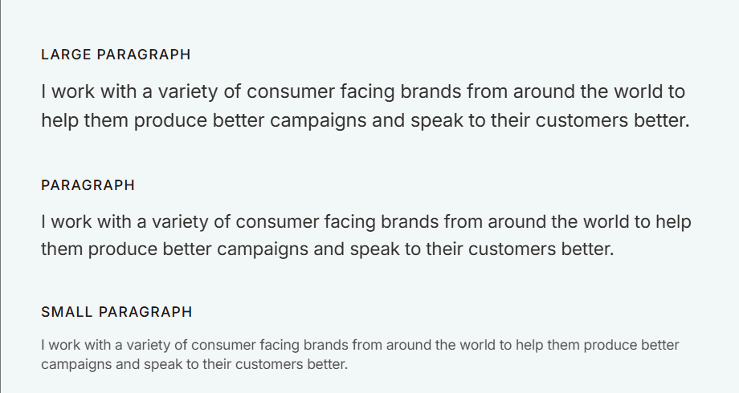

Design
My goal for this website is to showcase my work such as presenting my game design, and my projects. I want this website to also demonstrate my process such as highlighting my design thinking, from wireframes and sketches to colour palettes. This website should also document my learning and growth as its reflected in my blogs where I highlighted the Challenges and my insights.
wireframes
On the top of the page will be the navagiation bar where users will be able to access the different pages. Below the navigation will be a welcome text following by a brief intro of myself accompanied by a picture. I will also place my contact details on my homepage, either on the footer or main section of the page (the bottom).
My second idea was that the page navigation bar will be accessed both at the top of the page and and the bottom of the page. However, at the bottom will be pictures or icons representing different folders.


The page will open to a navigation bar at the top right of the page. I plan on showcasing drawings and games \ so it will be a combination of different pictures that represents that particular portfolio
Another idea is a page showing two different kinds of portfolio. So on part will be showing only drawings and the other part will be showing only games


User flow

Style Guide
This style guide contains style and components used through the website
Typography
The different text sizes used throughout the site
Colours
Colours used throughout the website